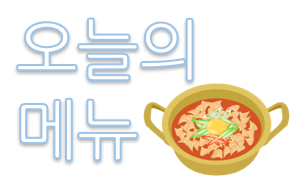

menu : Chuncheon Chicken Ribs Rice Bowl
price : 7,900 won
description : a popular Korean dish where spicy stir-fried chicken, known as dakgalbi, is served over a bed of rice.
ingredients : Spicy stir-fried chicken, Chicken meat, Onion, Carrot, Cabbage, green onions, red chili pepper, red pepper paste, soy sauce, sugar, minced garlic, sesame oil, sesame seeds, cooked rice
꾸이한끼
또바기 육개장

오늘의 메뉴
쑝쑝돈까스

삼삼 반점
싸움의 고수